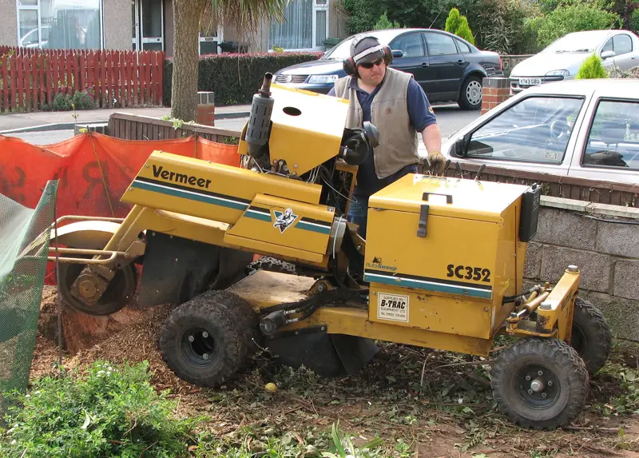
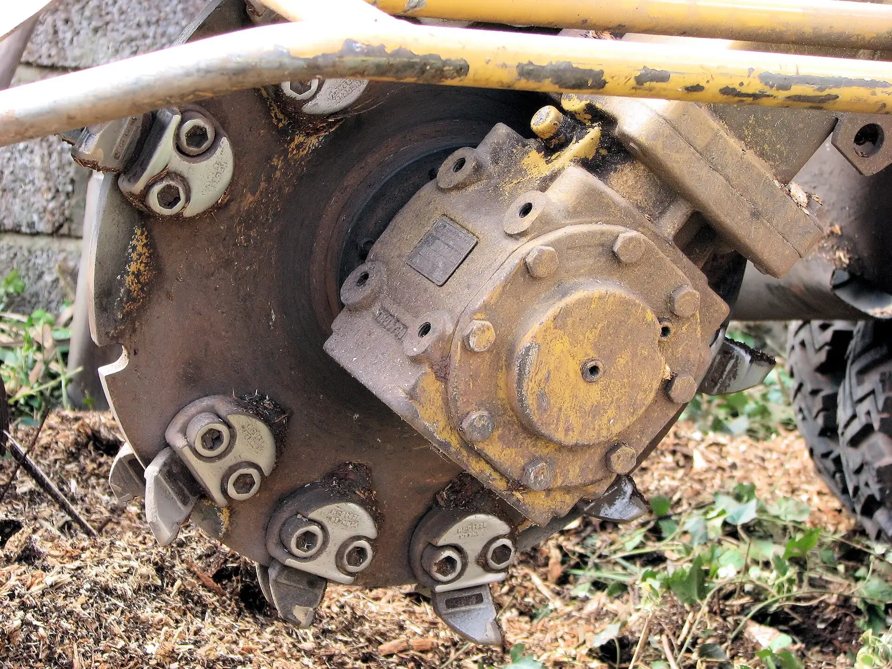
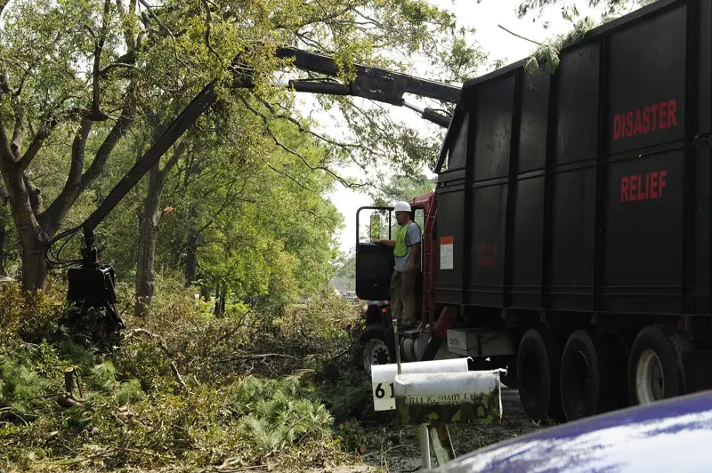
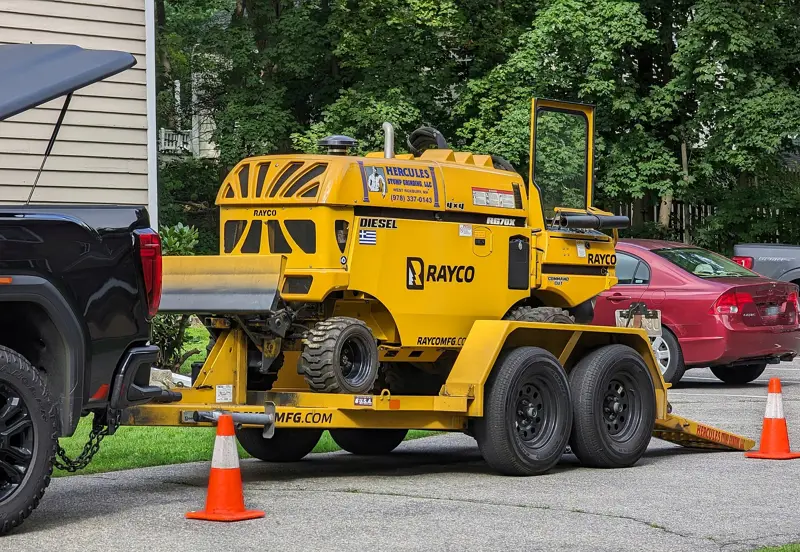
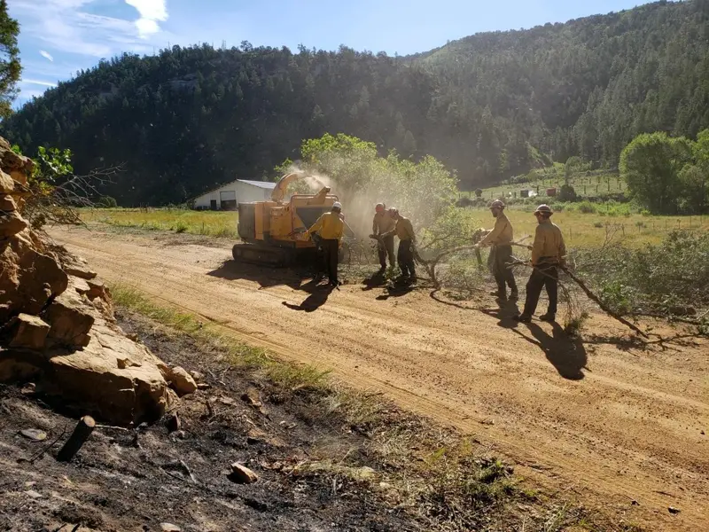
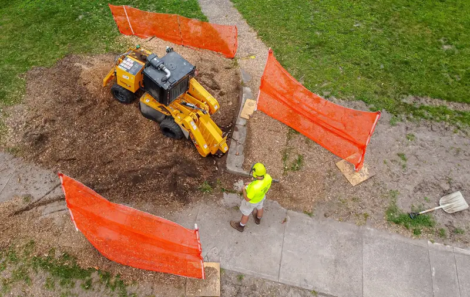
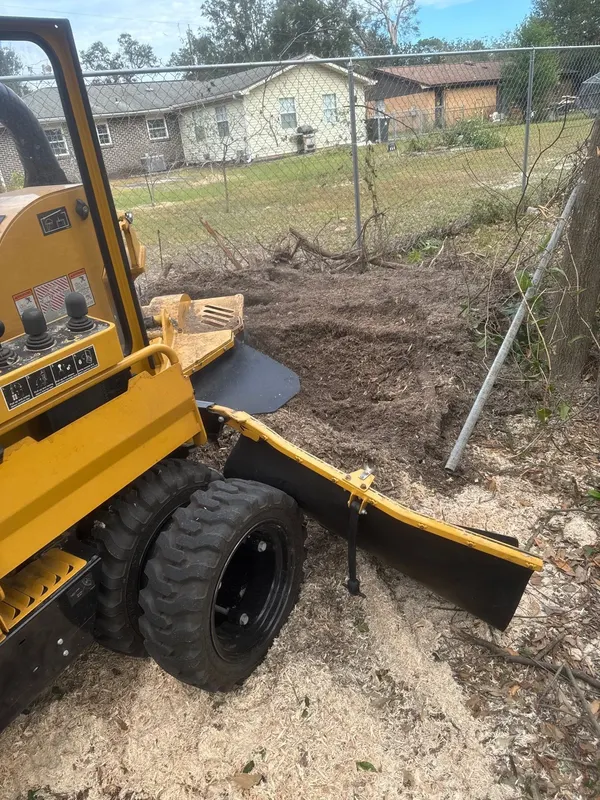
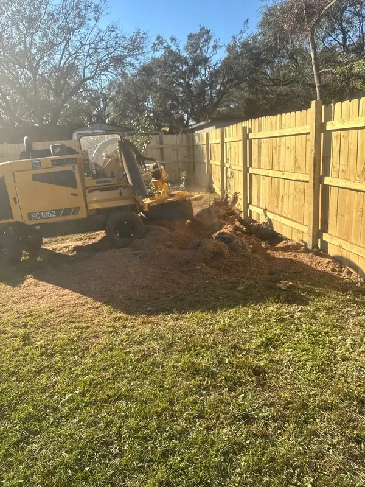
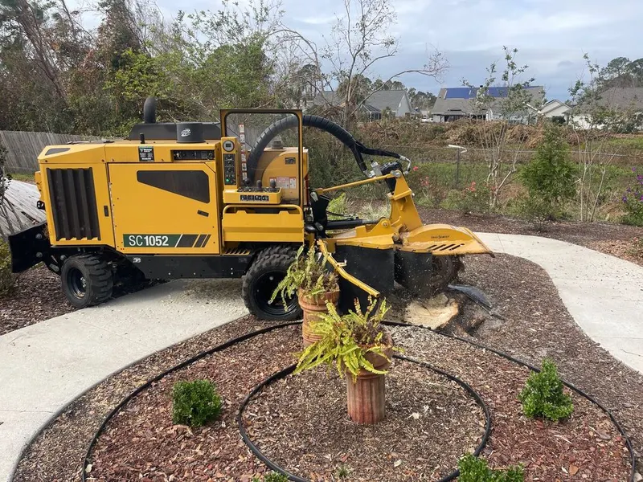
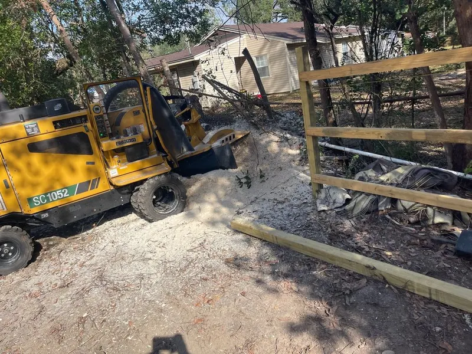

Stump Grinding
Single stumps or whole yards. We grind below grade so you can replant, sod or build, and we leave the site tidy. Most stumps $200 to $400.

Pensacola · Pensacola Beach · Gulf Breeze · Northwest Florida
Stumps gone. Ground below grade.
Stump grinding first, plus tree removal, trimming, land clearing and storm cleanup for homeowners, landscapers and property managers across the Pensacola area. Clear pricing, quick scheduling, a clean yard when we leave.
What we do
Stump grinding is front and center. Tree work, clearing and storm cleanup round out the job so one crew can finish the site.

Single stumps or whole yards. We grind below grade so you can replant, sod or build, and we leave the site tidy. Most stumps $200 to $400.

Hazard trees, storm-damaged trees and trees that need to come down before we grind the stump.

Trimming and pruning to clear lines of sight, reduce storm risk and keep canopy healthy.

Brush, saplings, overgrowth and stumps cleared from lots, fence lines and future build sites.

After a hurricane or big blow, we help clear downed trees, root balls and debris so you can get back to normal.
For the trade
Need stumps handled on your jobs? We work as your stump grinding sub so you can keep your crews on the work you do best. Multi-property and repeat work welcome.
Ask about subcontract workStraightforward pricing
Price depends on stump diameter, root spread, access and how many stumps are on the job. You get a free, exact quote before any work starts. No surprises.
Typical range per stump
$200to$400
Simple from start to finish
Call, or send the address and stump details through the form.
We look at size, roots and access, then give you a firm price.
We show up on schedule, call in utility locates as needed, and get to work.
Stump ground below grade and the area left ready for what is next.
Where we work
Service-area business covering about a 50-mile radius around Pensacola Beach across Escambia County, Santa Rosa County, Okaloosa County and Walton County in Florida, plus Baldwin County and Escambia County in Alabama.
Full service area and counties. Not on the list? Call and ask. We often travel for larger jobs.
About
StumpsRx is a Pensacola stump grinding and tree service company. We are a small local crew with our own equipment, including a Vermeer stump grinder.
We work for homeowners, landscapers, property managers and builders who want stumps gone without the runaround: a clear quote, an on-time arrival and a clean finish.
Recent work
Real stump grinding jobs around Pensacola, Milton and Gulf Breeze.




Questions
Most stumps run $200 to $400. Size, roots, access and the number of stumps set the final number, and you get a free exact quote before any work starts.
Grinding is how we remove a stump. We grind the stump and the major surface roots below grade, so the spot can be covered with soil and sod or replanted.
We grind below grade so the area can be covered with soil and sod or replanted. Tell us your plans for the spot and we will grind to suit.
You can keep them as mulch, or we can rake them back into the hole and clean up the area. Ask about haul-off when you get your quote.
Yes. Florida requires a Sunshine 811 locate before digging, and we handle that before grinding where it applies.
Yes. Tree removal and trimming are available alongside stump grinding, land clearing and storm cleanup.
Yes. We subcontract stump grinding and clearing for landscaping companies, property managers and builders, including repeat and multi-property work.
Tell us your gate width when you reach out and we will confirm access before the job.
Free quote
Send the address and a few details about the stump. We reply with a free, exact quote.